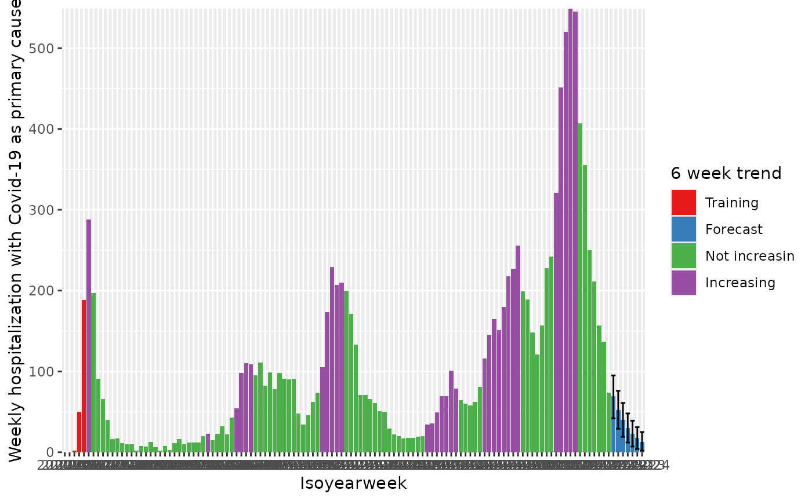
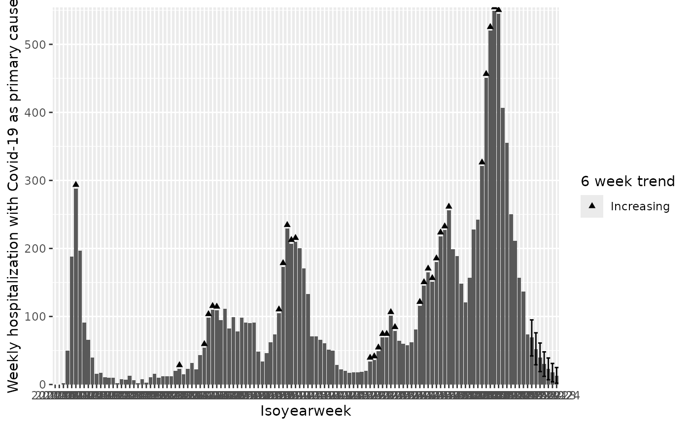
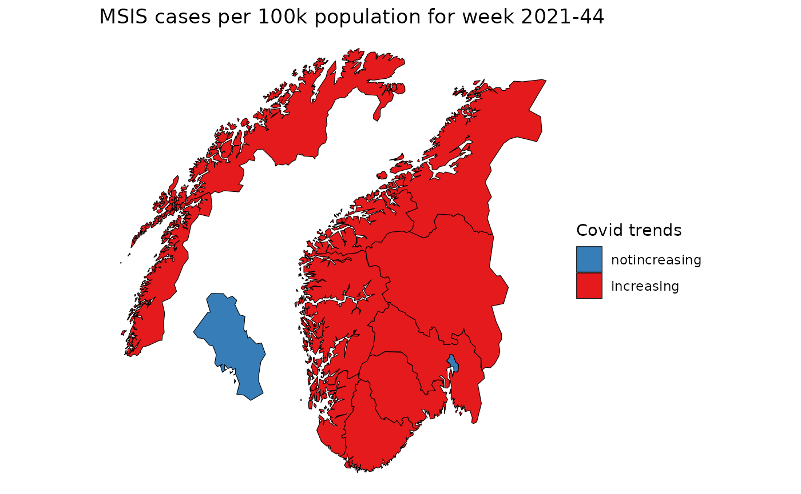

vignettes/short_term_trend.Rmd
short_term_trend.RmdIn this vignette we illustrate how to compute short term trend with
csalert::short_term_trend.
The Covid-19 hospitalization data contains both daily and weekly aggregated number of hospitalization due to Covid (as a main cause) for Norway. The data does not distinguish age groups or sex.
This dataset is extracted on 2022-05-04. The time period is from 2020-02-21 to 2022-05-03.
The data in csv and xlsx formats can be found on our Github repository.
cstidy format
We have prepared the data into cstidy format, from which we can see the summary of each column, such as data type and amount of missing data.
d_hosp <- cstidy::nor_covid19_icu_and_hospitalization_csfmt_rts_v1
d_hosp
#> granularity_time granularity_geo country_iso3 location_code border age
#> <char> <char> <char> <char> <int> <char>
#> 1: date nation nor nation_nor 2020 total
#> 2: date nation nor nation_nor 2020 total
#> 3: date nation nor nation_nor 2020 total
#> 4: date nation nor nation_nor 2020 total
#> 5: date nation nor nation_nor 2020 total
#> ---
#> 915: isoyearweek nation nor nation_nor 2020 total
#> 916: isoyearweek nation nor nation_nor 2020 total
#> 917: isoyearweek nation nor nation_nor 2020 total
#> 918: isoyearweek nation nor nation_nor 2020 total
#> 919: isoyearweek nation nor nation_nor 2020 total
#> sex isoyear isoweek isoyearweek season seasonweek calyear calmonth
#> <char> <int> <int> <char> <char> <num> <int> <int>
#> 1: total 2020 8 2020-08 2019/2020 31 2020 2
#> 2: total 2020 8 2020-08 2019/2020 31 2020 2
#> 3: total 2020 8 2020-08 2019/2020 31 2020 2
#> 4: total 2020 9 2020-09 2019/2020 32 2020 2
#> 5: total 2020 9 2020-09 2019/2020 32 2020 2
#> ---
#> 915: total 2022 14 2022-14 <NA> NA NA NA
#> 916: total 2022 15 2022-15 <NA> NA NA NA
#> 917: total 2022 16 2022-16 <NA> NA NA NA
#> 918: total 2022 17 2022-17 <NA> NA NA NA
#> 919: total 2022 18 2022-18 <NA> NA NA NA
#> calyearmonth date icu_with_positive_pcr_n
#> <char> <Date> <int>
#> 1: 2020-M02 2020-02-21 0
#> 2: 2020-M02 2020-02-22 0
#> 3: 2020-M02 2020-02-23 0
#> 4: 2020-M02 2020-02-24 0
#> 5: 2020-M02 2020-02-25 0
#> ---
#> 915: <NA> 2022-04-10 21
#> 916: <NA> 2022-04-17 11
#> 917: <NA> 2022-04-24 17
#> 918: <NA> 2022-05-01 9
#> 919: <NA> 2022-05-08 0
#> hospitalization_with_covid19_as_primary_cause_n
#> <int>
#> 1: 0
#> 2: 0
#> 3: 0
#> 4: 0
#> 5: 0
#> ---
#> 915: 211
#> 916: 157
#> 917: 137
#> 918: 74
#> 919: 10Now we run the short_term_trend function on weekly
data.
d_hosp_weekly <- d_hosp[granularity_time=="isoyearweek"]
res <- csalert::short_term_trend(
d_hosp_weekly,
numerator = "hospitalization_with_covid19_as_primary_cause_n",
trend_isoyearweeks = 6,
remove_last_isoyearweeks = 1
)
# create the trend label
res[, hospitalization_with_covid19_as_primary_cause_trend0_41_status := factor(
hospitalization_with_covid19_as_primary_cause_trend0_41_status,
levels = c("training","forecast","notincreasing", "increasing"),
labels = c("Training","Forecast","Not increasin", "Increasing")
)]
colnames(res)
#> [1] "granularity_time"
#> [2] "granularity_geo"
#> [3] "country_iso3"
#> [4] "location_code"
#> [5] "border"
#> [6] "age"
#> [7] "sex"
#> [8] "isoyear"
#> [9] "isoweek"
#> [10] "isoyearweek"
#> [11] "season"
#> [12] "seasonweek"
#> [13] "calyear"
#> [14] "calmonth"
#> [15] "calyearmonth"
#> [16] "date"
#> [17] "icu_with_positive_pcr_n"
#> [18] "hospitalization_with_covid19_as_primary_cause_n"
#> [19] "hospitalization_with_covid19_as_primary_cause_forecasted_n"
#> [20] "hospitalization_with_covid19_as_primary_cause_forecasted_predinterval_q02x5_n"
#> [21] "hospitalization_with_covid19_as_primary_cause_forecasted_predinterval_q97x5_n"
#> [22] "hospitalization_with_covid19_as_primary_cause_forecasted_n_forecast"
#> [23] "hospitalization_with_covid19_as_primary_cause_trend0_41_status"
#> [24] "hospitalization_with_covid19_as_primary_cause_doublingdays0_41"We can check some columns that have been added to the original data.
# check some columns
res[
,
.(
date,
hospitalization_with_covid19_as_primary_cause_n,
hospitalization_with_covid19_as_primary_cause_forecasted_n,
hospitalization_with_covid19_as_primary_cause_trend0_41_status
)
]
#> date hospitalization_with_covid19_as_primary_cause_n
#> <Date> <int>
#> 1: 2020-02-23 0
#> 2: 2020-03-01 0
#> 3: 2020-03-08 2
#> 4: 2020-03-15 50
#> 5: 2020-03-22 188
#> ---
#> 118: 2022-05-22 NA
#> 119: 2022-05-29 NA
#> 120: 2022-06-05 NA
#> 121: 2022-06-12 NA
#> 122: 2022-06-19 NA
#> hospitalization_with_covid19_as_primary_cause_forecasted_n
#> <int>
#> 1: 0
#> 2: 0
#> 3: 2
#> 4: 50
#> 5: 188
#> ---
#> 118: 40
#> 119: 30
#> 120: 23
#> 121: 18
#> 122: 13
#> hospitalization_with_covid19_as_primary_cause_trend0_41_status
#> <fctr>
#> 1: Training
#> 2: Training
#> 3: Training
#> 4: Training
#> 5: Training
#> ---
#> 118: Forecast
#> 119: Forecast
#> 120: Forecast
#> 121: Forecast
#> 122: ForecastWe can visualize the trend indicator with different colors.
q <- ggplot(
res,
aes(
x = isoyearweek,
y = hospitalization_with_covid19_as_primary_cause_forecasted_n,
group = 1
)
)
q <- q + geom_col(mapping = aes(fill = hospitalization_with_covid19_as_primary_cause_trend0_41_status))
q <- q + geom_errorbar(
mapping = aes(
ymin = hospitalization_with_covid19_as_primary_cause_forecasted_predinterval_q02x5_n,
ymax = hospitalization_with_covid19_as_primary_cause_forecasted_predinterval_q97x5_n
)
)
q <- q + scale_y_continuous("Weekly hospitalization with Covid-19 as primary cause", expand = c(0, 0.1))
q <- q + scale_x_discrete("Isoyearweek")
q <- q + expand_limits(y=0)
q <- q + scale_fill_brewer("6 week trend", palette = "Set1")
q
They can also be represented via shapes:
shape_adjustment_factor <- max(res$hospitalization_with_covid19_as_primary_cause_forecasted_n)*0.01
q <- ggplot(
res,
aes(
x = isoyearweek,
y = hospitalization_with_covid19_as_primary_cause_forecasted_n,
group = 1
)
)
q <- q + geom_col()
q <- q + geom_point(mapping = aes(
y = hospitalization_with_covid19_as_primary_cause_forecasted_n + shape_adjustment_factor,
shape = hospitalization_with_covid19_as_primary_cause_trend0_41_status
))
q <- q + geom_errorbar(
mapping = aes(
ymin = hospitalization_with_covid19_as_primary_cause_forecasted_predinterval_q02x5_n,
ymax = hospitalization_with_covid19_as_primary_cause_forecasted_predinterval_q97x5_n
)
)
q <- q + scale_y_continuous("Weekly hospitalization with Covid-19 as primary cause", expand = c(0, 0.1))
q <- q + scale_x_discrete("Isoyearweek")
q <- q + expand_limits(y=0)
q <- q + scale_shape_manual("6 week trend", values = c("Increasing" = 17, "Decreasing" = 6))
q
#> Warning: Removed 91 rows containing missing values or values outside the scale range
#> (`geom_point()`).
d <- cstidy::nor_covid19_cases_by_time_location_csfmt_rts_v1[
granularity_time == "isoyearweek" &
granularity_geo == "county"
]
trend <- csalert::short_term_trend(
d,
numerator = "covid19_cases_testdate_n",
trend_isoyearweeks = 6,
remove_last_isoyearweeks = 1
)
print(trend)
#> granularity_time granularity_geo country_iso3 location_code border age
#> <char> <char> <char> <char> <int> <char>
#> 1: isoyearweek county nor county_nor03 2020 total
#> 2: isoyearweek county nor county_nor03 2020 total
#> 3: isoyearweek county nor county_nor03 2020 total
#> 4: isoyearweek county nor county_nor03 2020 total
#> 5: isoyearweek county nor county_nor03 2020 total
#> ---
#> 1338: isoyearweek county nor county_nor54 2020 total
#> 1339: isoyearweek county nor county_nor54 2020 total
#> 1340: isoyearweek county nor county_nor54 2020 total
#> 1341: isoyearweek county nor county_nor54 2020 total
#> 1342: isoyearweek county nor county_nor54 2020 total
#> sex isoyear isoweek isoyearweek season seasonweek calyear calmonth
#> <char> <int> <int> <char> <char> <num> <int> <int>
#> 1: total 2020 8 2020-08 2019/2020 31 NA NA
#> 2: total 2020 9 2020-09 2019/2020 32 NA NA
#> 3: total 2020 10 2020-10 2019/2020 33 NA NA
#> 4: total 2020 11 2020-11 2019/2020 34 NA NA
#> 5: total 2020 12 2020-12 2019/2020 35 NA NA
#> ---
#> 1338: total 2022 20 2022-20 2021/2022 43 NA NA
#> 1339: total 2022 21 2022-21 2021/2022 44 NA NA
#> 1340: total 2022 22 2022-22 2021/2022 45 NA NA
#> 1341: total 2022 23 2022-23 2021/2022 46 NA NA
#> 1342: total 2022 24 2022-24 2021/2022 47 NA NA
#> calyearmonth date covid19_cases_testdate_n
#> <char> <Date> <int>
#> 1: <NA> 2020-02-23 0
#> 2: <NA> 2020-03-01 7
#> 3: <NA> 2020-03-08 39
#> 4: <NA> 2020-03-15 276
#> 5: <NA> 2020-03-22 366
#> ---
#> 1338: <NA> 2022-05-22 NA
#> 1339: <NA> 2022-05-29 NA
#> 1340: <NA> 2022-06-05 NA
#> 1341: <NA> 2022-06-12 NA
#> 1342: <NA> 2022-06-19 NA
#> covid19_cases_testdate_pr100000 covid19_cases_testdate_forecasted_n
#> <num> <int>
#> 1: 0.000000 0
#> 2: 1.009381 7
#> 3: 5.623697 39
#> 4: 39.798470 276
#> 5: 52.776232 366
#> ---
#> 1338: NA 12
#> 1339: NA 7
#> 1340: NA 4
#> 1341: NA 3
#> 1342: NA 2
#> covid19_cases_testdate_forecasted_predinterval_q02x5_n
#> <num>
#> 1: NA
#> 2: NA
#> 3: NA
#> 4: NA
#> 5: NA
#> ---
#> 1338: -9
#> 1339: -9
#> 1340: -8
#> 1341: -7
#> 1342: -6
#> covid19_cases_testdate_forecasted_predinterval_q97x5_n
#> <num>
#> 1: NA
#> 2: NA
#> 3: NA
#> 4: NA
#> 5: NA
#> ---
#> 1338: 34
#> 1339: 24
#> 1340: 17
#> 1341: 12
#> 1342: 9
#> covid19_cases_testdate_forecasted_n_forecast
#> <lgcl>
#> 1: FALSE
#> 2: FALSE
#> 3: FALSE
#> 4: FALSE
#> 5: FALSE
#> ---
#> 1338: TRUE
#> 1339: TRUE
#> 1340: TRUE
#> 1341: TRUE
#> 1342: TRUE
#> covid19_cases_testdate_trend0_41_status
#> <fctr>
#> 1: training
#> 2: training
#> 3: training
#> 4: training
#> 5: training
#> ---
#> 1338: forecast
#> 1339: forecast
#> 1340: forecast
#> 1341: forecast
#> 1342: forecast
#> covid19_cases_testdate_doublingdays0_41
#> <num>
#> 1: NA
#> 2: NA
#> 3: NA
#> 4: NA
#> 5: NA
#> ---
#> 1338: NA
#> 1339: NA
#> 1340: NA
#> 1341: NA
#> 1342: NA
pd <- copy(csmaps::nor_county_map_b2020_split_dt)
pd[
trend[isoyearweek == "2021-44"],
on = c("location_code"),
covid19_cases_testdate_trend0_41_status := covid19_cases_testdate_trend0_41_status
]
# plot map
q <- ggplot()
q <- q + geom_polygon(
data = pd,
mapping = aes(x = long, y = lat, group = group,fill=covid19_cases_testdate_trend0_41_status),
color="black",
linewidth = 0.2
)
q <- q + coord_quickmap()
q <- q + theme_void()
q <- q + labs(title="MSIS cases per 100k population for week 2021-44")
q <- q + scale_fill_brewer("Covid trends", palette = "Set1", direction = -1)
q